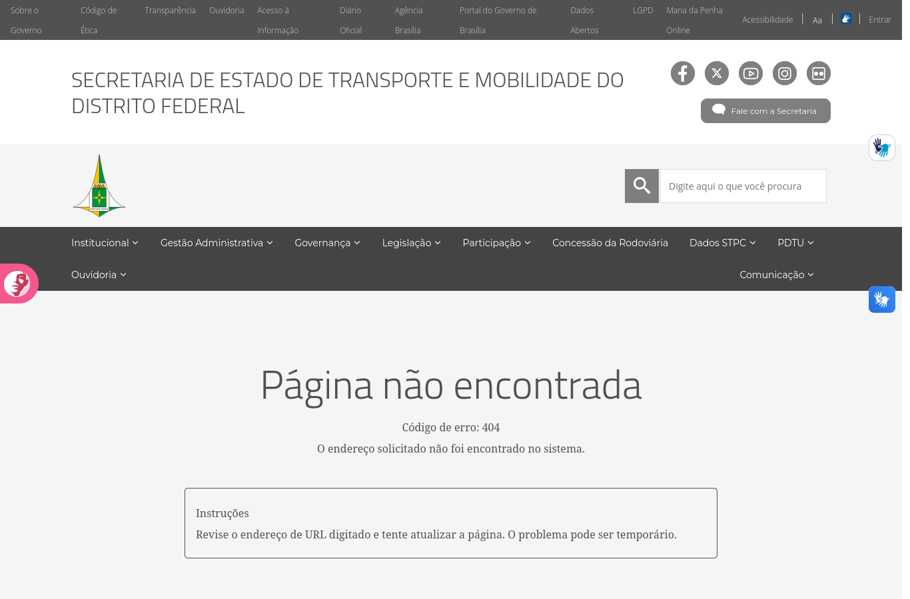
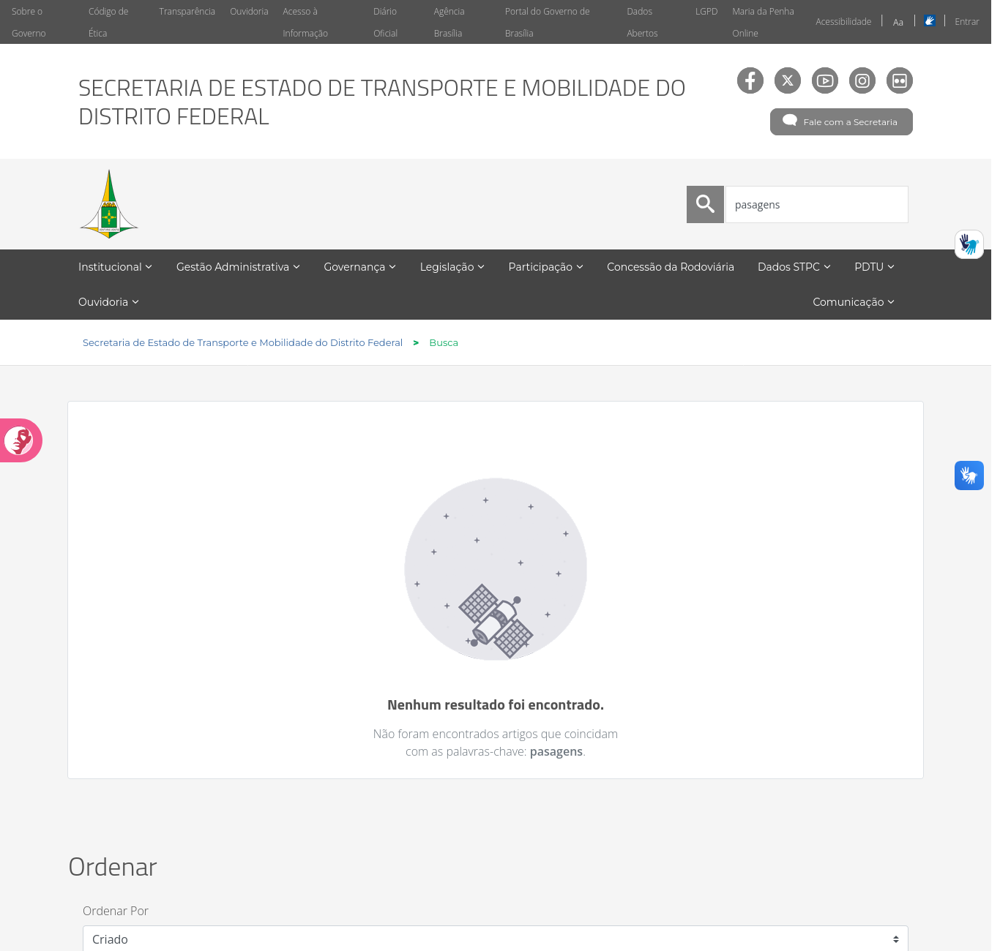
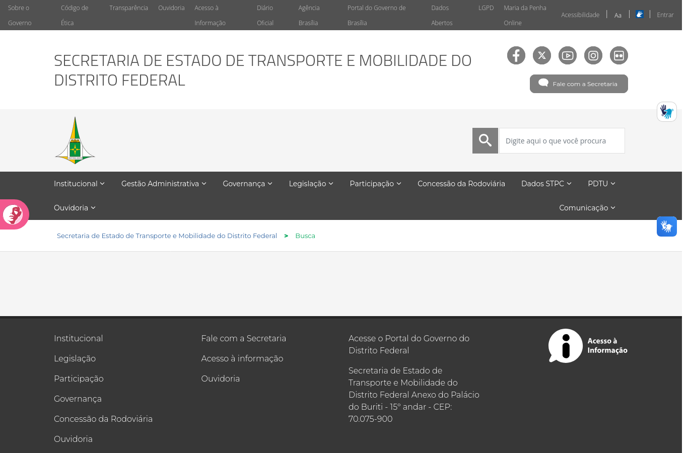

Projeto para Erros no site da SEMOB-DF¶
Histórico de Versão e Contribuição¶
| Data | Versão | Descrição | Autor(es) | Revisor(es) |
|---|---|---|---|---|
| 05/10/2026 | 1.0 | Criação do documento com a análise do princípio 10.2.9 Projeto para Erros no site da SEMOB-DF. | Tomás Rocho | Rodrigo Carvalho |
- Autor: Tomás Rocho
- Revisor: Rodrigo Carvalho
- Site analisado: https://www.semob.df.gov.br/ (Secretaria de Estado de Transporte e Mobilidade do Distrito Federal)
- Princípio: 10.2.9 Projeto para Erros
- Referência: Barbosa, S. D. J. et al. (2021). Interação Humano-Computador e Experiência do Usuário, Cap. 10: Princípios e Diretrizes para o Design de IHC, pp. 247–248.
- Data da inspeção: 05/10/2026, em navegador desktop (Mozilla Firefox, janela de 1366 px de largura)
1. O princípio segundo o livro¶
O capítulo 10 apresenta o projeto para erros a partir de Norman (1988), Cooper (1999), Nielsen (1994) e Shneiderman (1998). As ideias usadas como critério nesta análise são:
- Assumir que todo erro possível será cometido (Norman). O designer deve projetar pensando nos erros, e não só no caminho ideal.
- Ajudar o usuário a se recuperar, informando "o que ocorreu, as consequências disso e como reverter os resultados indesejados" (Norman).
- Sistemas exploráveis: deve ser fácil reverter operações e difícil realizar ações irreversíveis.
- Não colocar controles de uso frequente ao lado de controles perigosos ou raramente usados (Cooper). O exemplo do livro é o botão Propriedades ao lado do botão Desabilitar (Figura 10.8).
- Evitar que os erros ocorram, em primeiro lugar (Nielsen, Shneiderman).
- Detectar o erro e oferecer mecanismos simples para tratá-lo, ajudando o usuário a reconhecer, diagnosticar e se recuperar. O exemplo do livro é a mensagem com "Tentar novamente" e "Voltar para a edição" (Figura 10.9).
- Mensagens de erro em linguagem simples, "sem códigos indecifráveis", que indiquem precisamente o problema e sugiram uma solução de forma construtiva.
- Ajuda e documentação de qualidade: fáceis de encontrar, focadas na tarefa, com passos concretos e sem ser extensas.
2. Como a inspeção foi feita¶
- Provocação deliberada de situações de erro comuns para um cidadão:
- acesso a um endereço inexistente (
/pagina-que-nao-existe-xyz); - busca com erro de digitação (
pasagens,passajem), com termo sem sentido (xyzqwe) e com o campo vazio; - busca sem acento e com variação de maiúsculas (
onibus,Onibus,ônibus). - Verificação do código de resposta HTTP de todos os 79 links internos da página inicial (
www.semob.df.gov.br). - Teste de acesso aos links que apontam para
semob.df.gov.br, sem "www". - Leitura do código HTML da página de erro, da busca e do formulário de login.
- Capturas de tela salvas na pasta
imagens/.
Limitações: o site é quase todo informativo, e o cidadão não envia formulários nele. Os formulários de manifestação ficam em sites externos (Participa DF, e-Protocolo), que não foram avaliados. O formulário de login, destinado aos servidores, não foi testado com credenciais. A versão para celular também não foi avaliada.
Escala de gravidade usada: Alta (impede ou atrapalha muito a tarefa), Média (confunde ou atrasa) e Baixa (problema cosmético).
3. Pontos positivos¶
| # | Observação | Relação com o princípio |
|---|---|---|
| P1 | O site tem uma página de erro própria (404), em português, que mantém o cabeçalho, o menu e a busca (imagem E1). | O usuário não é jogado para fora do site e ainda tem caminhos para continuar. |
| P2 | A busca ignora acentos e maiúsculas: onibus, Onibus e ônibus retornam os mesmos 65 resultados; horario e horário, os mesmos 31. |
Prevenção de erros: um deslize comum de digitação não impede a tarefa. |
| P3 | Quando a busca não encontra nada, o site diz isso claramente e repete o termo digitado ("Não foram encontrados artigos que coincidam com as palavras-chave: pasagens"), conforme a imagem E2. | Ajuda o usuário a reconhecer o erro: ele vê o que digitou e pode notar a falha. |
| P4 | Depois da busca, o termo continua no campo (imagem E2). | Facilita a correção: basta ajustar a palavra, sem redigitar tudo. |
| P5 | O formulário de login tem um aviso de "Caps Lock está ativado", que só aparece quando necessário (verificado no código). | Prevenção de um erro clássico de senha. |
| P6 | O cidadão não tem ações irreversíveis no site: não há exclusão, envio de dados ou pagamento. | Pela própria natureza do site, o risco de erros graves é baixo. |
4. Problemas encontrados¶
Resumo¶
| # | Problema | Diretriz violada (Cap. 10) | Gravidade |
|---|---|---|---|
| E1 | Links que levam a um erro que o site não consegue tratar (endereço sem "www") | Evitar que os erros ocorram; ajudar a recuperar | Alta |
| E2 | Item de menu que pede usuário e senha ao cidadão ("Plano de Fiscalização") | Evitar erros; informar o que ocorreu | Alta |
| E3 | Página 404 com código técnico, culpa o usuário e não oferece saída construtiva | Mensagens simples, precisas e construtivas | Média |
| E4 | Busca sem resultados não sugere correção nem alternativas | Ajudar a diagnosticar e se recuperar do erro | Média |
| E5 | Busca vazia leva a uma página em branco, sem nenhuma mensagem | Detectar o erro e informar o que ocorreu | Média |
| E6 | "Entrar" (área restrita) colado aos controles de acessibilidade | Não colocar controles de uso diferente lado a lado (Cooper) | Baixa |
E1. Links que levam a um erro que o site não consegue tratar (gravidade alta)¶
Como descrito nos documentos de Visibilidade (V2) e de Consistência (C3), 28 referências da página inicial apontam para semob.df.gov.br, sem "www". Esse endereço não existe no DNS, e o clique termina na tela de erro do navegador (ERR_NAME_NOT_RESOLVED), em uma nova aba. Entre os afetados estão 10 dos 12 cartões de Serviços Mais Procurados, os 11 botões da seção LAI, incluindo "Perguntas Frequentes", e o item Organograma do menu.
Do ponto de vista do projeto para erros, o problema é duplo:
- O erro não foi evitado. A falha está no próprio site e afeta os atalhos mais visíveis da página inicial.
- Não há como o site ajudar na recuperação. Como o pedido nunca chega ao servidor da SEMOB, nem a página 404 própria (P1) consegue aparecer. O usuário vê uma mensagem técnica do navegador, sem o que ocorreu, sem consequências e sem saída. Como a aba é nova, nem o botão "Voltar" funciona.
Vale notar que o link de ajuda (Perguntas Frequentes) está entre os quebrados. O livro pede que a ajuda seja "facilmente encontrada", e aqui o principal atalho para ela leva a um erro.
Por que é um problema: é o oposto de "evitar que os erros ocorram" (Nielsen, Shneiderman). Quando o erro acontece, também não há nenhum mecanismo que ajude o usuário a "reconhecer, diagnosticar e se recuperar".
Recomendação: corrigir os links (relativos ou com www) e configurar o DNS para que semob.df.gov.br redirecione para www.semob.df.gov.br. Assim, mesmo um link antigo ou digitado sem "www" passa a cair no site e, se for o caso, na página 404 própria. Incluir também a verificação periódica de links quebrados na rotina de manutenção do portal.
E2. Item de menu que pede usuário e senha ao cidadão (gravidade alta)¶
No menu Governança, o item "Plano de Fiscalização" aponta para um arquivo PDF em um endereço de gerenciamento interno do portal (/webdav/semob/document_library/...). Esse endereço exige autenticação: o servidor responde com o código 401 e o cabeçalho WWW-Authenticate: Digest realm="PortalRealm".
Na prática, ao clicar num item comum do menu, o cidadão recebe uma janela de usuário e senha do navegador, sem nenhuma explicação. Ele não tem essas credenciais. Se cancelar, o servidor não envia nenhum conteúdo (Content-Length: 0), e não aparece nenhuma mensagem dizendo o que houve nem onde encontrar o documento.
Dos 79 links internos da página inicial verificados, este foi o único que retornou erro (os demais retornaram 200 ou redirecionamentos 302 normais).
Por que é um problema: o usuário é levado a um "erro" que não cometeu. O sistema também não informa "o que ocorreu, as consequências disso e como reverter". Pior, um pedido de senha inesperado pode levar o cidadão a achar que o documento é sigiloso ou que precisa de cadastro, ou ainda a digitar senhas de outros serviços numa janela que não conhece.
Recomendação: substituir o link pelo endereço público do documento na biblioteca de arquivos do portal (/documents/...), como já é feito em outros arquivos do site. Evitar publicar links de WebDAV na interface pública.
E3. Página 404 com código técnico, que culpa o usuário e não oferece saída (gravidade média)¶
A página de erro própria do site (imagem E1) é um ponto positivo (P1), mas o conteúdo da mensagem não segue as recomendações do livro:
| Texto da página | Problema |
|---|---|
| "Código de erro: 404" | É o "código indecifrável" que o livro pede para evitar. Para o cidadão, o número não significa nada. |
| "O endereço solicitado não foi encontrado no sistema." | Diz o que ocorreu, mas não por que nem o que fazer. |
| "Revise o endereço de URL digitado..." | Supõe que o usuário digitou o endereço. Na maioria dos casos ele clicou num link do próprio site ou de um buscador, e a culpa não é dele. "URL" também é jargão técnico. |
| "...e tente atualizar a página. O problema pode ser temporário." | Sugestão imprecisa. Uma página que não existe não volta a existir se o usuário atualizar a tela. |
Além disso, a área de conteúdo não oferece nenhum link ou ação: não há botão para a página inicial, não há links para os serviços mais procurados e não há como avisar a Secretaria sobre o link quebrado. A busca e o menu continuam no cabeçalho, mas a mensagem não os menciona.
Por que é um problema: o livro pede mensagens de erro que "indiquem precisamente o problema e sugiram uma solução de forma construtiva". Também mostra, na Figura 10.9, que uma boa mensagem oferece caminhos de recuperação ("Tentar novamente", "Voltar para a edição"), e não apenas um "OK".
Recomendação: reescrever a mensagem em linguagem simples, sem culpar o usuário. Exemplo: "Não encontramos esta página. Ela pode ter mudado de endereço ou sido removida." Depois, oferecer ações: um campo de busca no corpo da página, links para Linhas e horários, Preços das passagens e Página inicial, e um link "Avisar sobre este link quebrado" para a Ouvidoria ou o "Fale com a Secretaria". O código 404 pode ficar, em letra pequena, para uso técnico.

Imagem E1: página de erro própria, com "Código de erro: 404", instrução para revisar a "URL digitada" e nenhum link ou ação na área de conteúdo.E4. Busca sem resultados não sugere correção nem alternativas (gravidade média)¶
A busca ignora acentos (P2), mas não tolera erros de digitação. Um único caractere a menos faz o resultado cair a zero:
| Termo buscado | Resultado |
|---|---|
passagem |
6 resultados |
pasagens (falta um "s") |
Nenhum resultado |
passajem (j no lugar de g) |
Nenhum resultado |
Na tela de "Nenhum resultado foi encontrado" (imagem E2):
- não há sugestão de correção do tipo "Você quis dizer: passagens?";
- não há dicas de como buscar melhor, como usar outras palavras ou termos mais gerais;
- não há links alternativos para os serviços mais procurados nem para o "Fale com a Secretaria";
- aparece o painel "Ordenar por: Criado", que não faz sentido quando não há nada para ordenar.
Por que é um problema: o livro pede que o sistema ajude o usuário a "reconhecer, diagnosticar e se recuperar de erros". A mensagem atual ajuda a reconhecer, porque repete o termo (P3), mas não ajuda a diagnosticar (foi erro de digitação? o conteúdo não existe?) nem a se recuperar. Para um público amplo, com diferentes níveis de escolaridade, erros de grafia na busca são esperados. Segundo Norman, "qualquer erro potencial será cometido".
Recomendação: ativar a sugestão ortográfica do mecanismo de busca do portal ("Você quis dizer..."). Acrescentar à tela sem resultados dicas curtas e links para as tarefas mais comuns do cidadão. Esconder o painel "Ordenar" quando não houver resultados.

Imagem E2: busca por "pasagens". A mensagem repete o termo (ponto positivo P3), mas não sugere "passagens", não oferece alternativas e ainda exibe o painel "Ordenar" sem resultados para ordenar.E5. Busca vazia leva a uma página em branco (gravidade média)¶
Se o usuário clicar na lupa sem digitar nada, por exemplo por engano ou achando que o botão abre um menu de busca, o site carrega a página Busca com a área de conteúdo completamente vazia (imagem E3). Não aparece nenhuma mensagem, nenhuma instrução e nenhum resultado.
No código, o campo de busca do cabeçalho não tem nenhuma validação (falta o atributo required, por exemplo). Nada impede o envio vazio, e nada explica o que aconteceu depois dele.
Por que é um problema: o erro é previsível e fácil de evitar ("evitar que os erros ocorram"). Depois que ele acontece, o usuário não recebe nenhuma informação sobre "o que ocorreu". Uma tela em branco pode ser interpretada como falha do site.
Recomendação: impedir o envio da busca vazia e, se ela acontecer, mostrar uma mensagem como "Digite uma palavra para buscar, por exemplo: passagem, horário, cartão". A página de busca vazia também pode exibir os serviços mais procurados.

Imagem E3: resultado de uma busca com o campo vazio. Abaixo da trilha de navegação, a área de conteúdo fica em branco.E6. "Entrar" colado aos controles de acessibilidade (gravidade baixa)¶
Na barra superior (imagem E1), o link "Entrar", que leva ao login dos servidores, fica imediatamente ao lado dos controles de acessibilidade: "Acessibilidade | Aa | [alto contraste] | Entrar". Os itens são pequenos, separados só por barras finas, e têm a mesma aparência.
Um usuário que tenta aumentar a fonte ou ativar o alto contraste pode clicar em "Entrar" por engano. A consequência não é destrutiva, mas abre sobre a página uma janela modal com um formulário de e-mail e senha que não é para ele (ver o elemento 2 no documento de Elementos de Interface). A janela pode ser fechada pelo botão ×, que é pequeno e não tem rótulo em texto. Isso acontece justamente com quem mais precisa dos recursos de acessibilidade, como pessoas com baixa visão ou dificuldade motora.
Por que é um problema: Cooper recomenda "não colocar controles de funções utilizadas com frequência adjacentes a controles perigosos ou que raramente são utilizados". Para o cidadão, "Entrar" é um controle sem uso. Os controles de acessibilidade são usados com frequência por parte do público.
Recomendação: retirar o "Entrar" da interface pública, como já sugerido no item V7 do documento de Visibilidade. Se ele precisar ficar, afastá-lo dos controles de acessibilidade e diferenciá-lo visualmente.
5. Síntese das recomendações¶
- Corrigir os links sem "www" e configurar o redirecionamento no DNS, para que nenhum clique termine em erro do navegador (resolve E1).
- Trocar o link WebDAV do "Plano de Fiscalização" pelo endereço público do documento (resolve E2).
- Reescrever a página 404 em linguagem simples, sem culpar o usuário, com busca, links úteis e uma forma de avisar sobre o link quebrado (resolve E3).
- Melhorar a busca: sugestão ortográfica, dicas e links na tela sem resultados, e bloqueio ou mensagem para a busca vazia (resolve E4 e E5).
- Separar o "Entrar" dos controles de acessibilidade, ou retirá-lo da interface pública (resolve E6).
- Verificar links quebrados periodicamente, como rotina de prevenção.
6. Conclusão¶
Por ser um site essencialmente informativo, o portal da SEMOB não expõe o cidadão a erros graves e irreversíveis. Nesse ponto, o princípio é atendido pela própria natureza do sistema. O site também tem bons mecanismos básicos: página de erro própria, busca que ignora acentos, mensagem que repete o termo buscado e aviso de Caps Lock no login. Os problemas estão em dois pontos. Primeiro, o próprio site provoca erros que poderiam ser evitados, como os links sem "www" e o item de menu que pede senha, e nesses casos não há nenhum mecanismo de recuperação. Segundo, quando o erro é do usuário, como digitar errado ou enviar uma busca vazia, as mensagens informam, mas não ajudam a sair dele: não sugerem correções, usam termos técnicos ("Código de erro: 404", "URL") e não oferecem caminhos alternativos. Seguir a orientação de Norman, de assumir que todo erro possível será cometido, levaria a correções simples, como sugestões de grafia, links úteis nas telas de erro e verificação de links quebrados, com bom ganho para o cidadão.
Referências¶
- BARBOSA, S. D. J.; SILVA, B. S. da; SILVEIRA, M. S.; GASPARINI, I.; DARIN, T.; BARBOSA, G. D. J. Interação Humano-Computador e Experiência do Usuário. Autopublicação, 2021. Cap. 10, Seção 10.2.9.
- COOPER, A. The Inmates Are Running the Asylum. Sams, 1999.
- NIELSEN, J. Usability Engineering. Morgan Kaufmann, 1994.
- NORMAN, D. A. The Design of Everyday Things. Basic Books, 1988.
- SHNEIDERMAN, B. Designing the User Interface. 3. ed. Addison-Wesley, 1998.